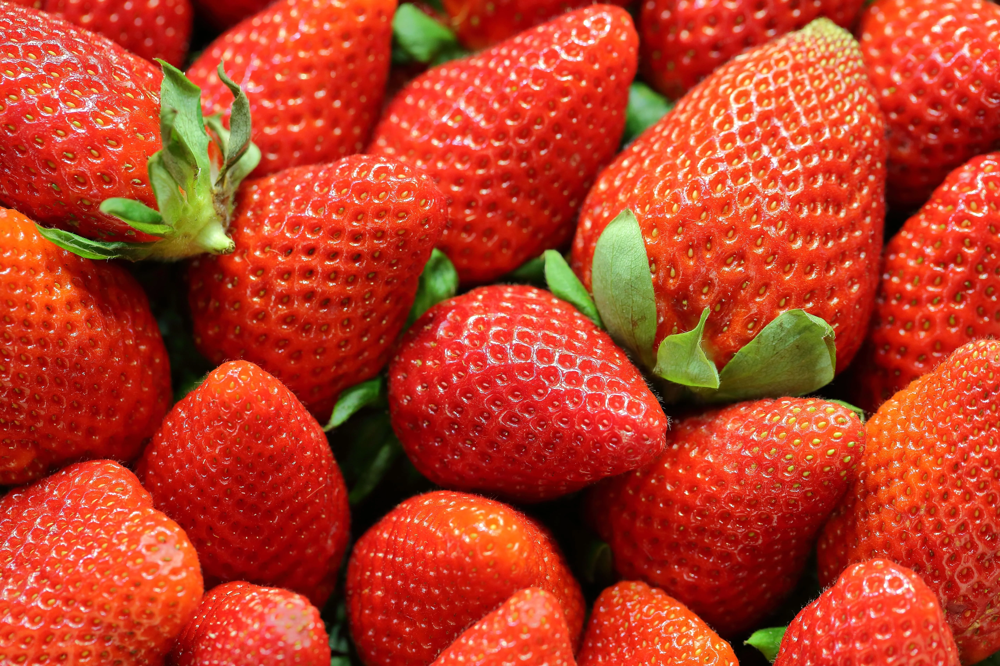

O morango é uma fruta extremamente versátil e presente na cozinha de todo bom cozinheiro, sempre dentro das melhores receitas de sobremesa, tortas, bolos, sorvetes, responsável também por compor ótimos drinks como caipifruta e daiquiri.
O morango é rico em vitamina C, vitamina essa que é um dos principais componentes para produção do colágeno da pele, responsável por prevenir formação de rugas e envelhecimento precoce, além de promover boa saúde dental e auxiliar no processo de cicatrização da pele, vitamina E que essencial para que se tenha uma dieta balanceada, que nos ajuda a promover glóbulos vermelhos do nosso sangue e melhora a absorção da vitamina K, que auxilia na coagulação.
A fruta é também um ótimo antioxidante, que trabalha para reduzir inflamações nas articulações, diminuindo risco de artrite e doenças cardiovasculares.Também é fonte de potássio e magnésio, o que diminui o risco de osteoporose em quem consome. Possui um baixo número de kcal para aqueles que queiram adicioná-lo em sua dieta. Nós sabemos que ele é o seu queridinho, também é o nosso, então nossa dica de hoje é como plantar morango, bem aí, na sua casa!
O morango pode ser cultivado em pequenos vasos, cestos e diretamente no chão.
Escolha o recipiente que for de melhor cômodo para você.
Em seguida, prepare bem a terra que será utilizada. Use uma peneira para remover a polpa da fruta e recolher as sementes.
Depois, é só enterrar as sementes e ir molhando a terra durante a semana para que a mesma se mantenha úmida.
Após os surgimentos dos primeiros brotos, você pode optar por escolher um outro local onde sua plantinha vai ficar, caso contrário, é só continuar com os cuidados.